Demo
Jedna rzecz,
oglądana z dwóch stron.
Pacjent widzi stronę, na której da się umówić o 23:00. Ty widzisz panel, który rano mówi, do kogo zadzwonić. To jest ten sam grafik i ci sami ludzie — dlatego nic się nie rozjeżdża. Przełącz się niżej i zobacz jedno albo drugie.
Oba dema są otwarte i działają naprawdę. Możesz w nich klikać wszystko — niczego nie zepsujesz.
Tak wygląda droga człowieka, który o dwudziestej trzeciej wpisuje w telefon to, co go boli. Sekcje oznaczone jako pakiet Prowadzenie działają wtedy, gdy prowadzimy też opiekę nad terapią — reszta jest w każdym pakiecie.
01
Przychodzi z pytaniem, nie z nazwą usługi
Nikt nie wpisuje w Google „terapia manualna”. Ludzie wpisują „boli mnie krzyż”. Pierwszy ekran jest ułożony dokładnie wokół tego pytania: cztery rzeczy, z którymi do Ciebie przychodzą, każda w swoim kolorze i każda prowadząca prosto do godziny.
- Zamiast cennika i zakładek — jedno pytanie i cztery odpowiedzi
- Obok od razu najbliższe wolne godziny, prawdziwe, z Twojego grafiku
- Nikt nie musi dzwonić, żeby się dowiedzieć, czy przyjmujesz w czwartek
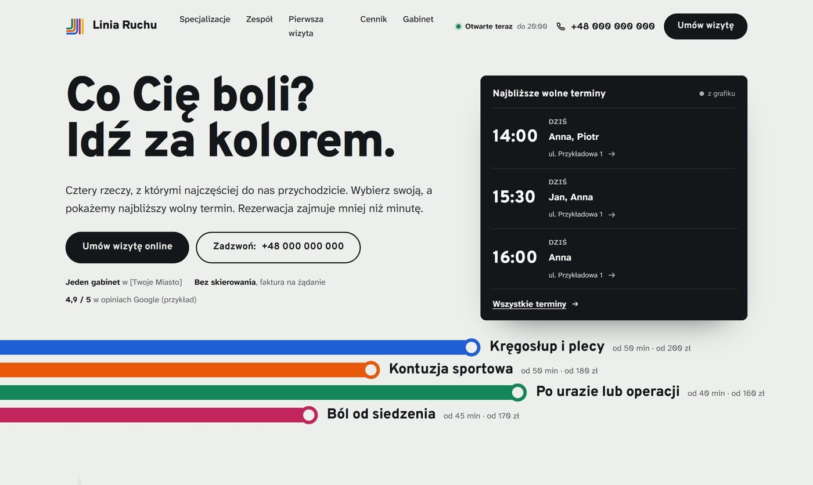
Powiększ02
Nie wie, co wybrać? Trzy pytania i już wie
Połowa ludzi odkłada telefon, bo nie potrafi nazwać swojego problemu i boi się, że wybierze źle. Tu odpowiada na trzy pytania — gdzie boli, od jak dawna, co to pogarsza — i dostaje konkret: od czego zacząć, ile to trwa, ile kosztuje i kiedy jest wolny termin.
- Wyjaśnienie napisane tak, jak powiedziałbyś to przy pierwszej wizycie
- Na końcu przycisk, który wchodzi w rezerwację z już wybraną usługą
- Wyraźnie napisane, że to podpowiedź, a nie diagnoza — nikt nie obiecuje niczego za Ciebie
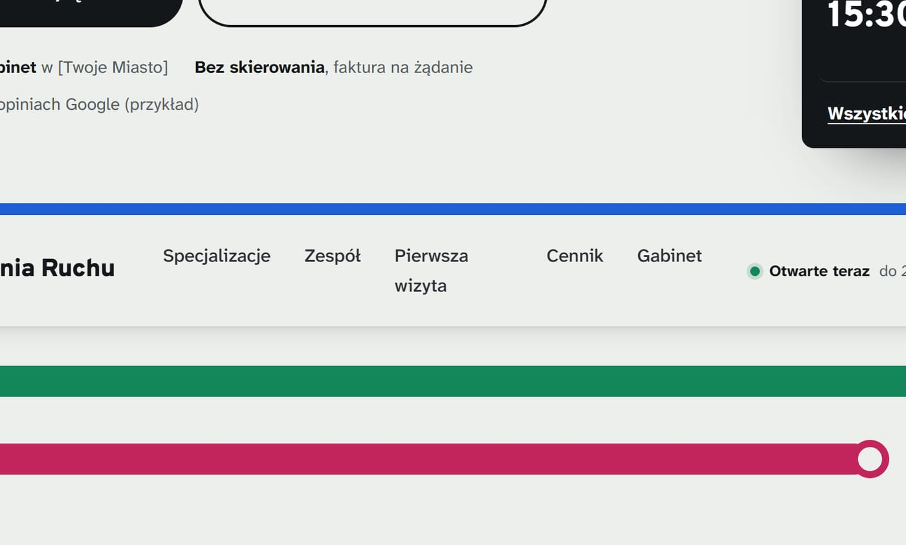
Powiększ03
Wybiera godzinę, zamiast czekać na oddzwonienie
Nie ma formularza „skontaktujemy się”. Są Twoje wolne godziny — te same, które włączasz w kalendarzu dostępności. Pacjent bierze tę, która mu pasuje, o dowolnej porze dnia i nocy.
- Może wskazać konkretną osobę z zespołu albo wziąć pierwszą wolną godzinę u kogokolwiek
- Zajęte terminy w ogóle się nie pokazują, więc nigdy nie ma dwóch osób na 10:00
- Opisuje swoimi słowami, co go boli — to trafia do karty i terapeuta przychodzi przygotowany
- Trzy kroki i każdy da się cofnąć, bez zaczynania od nowa
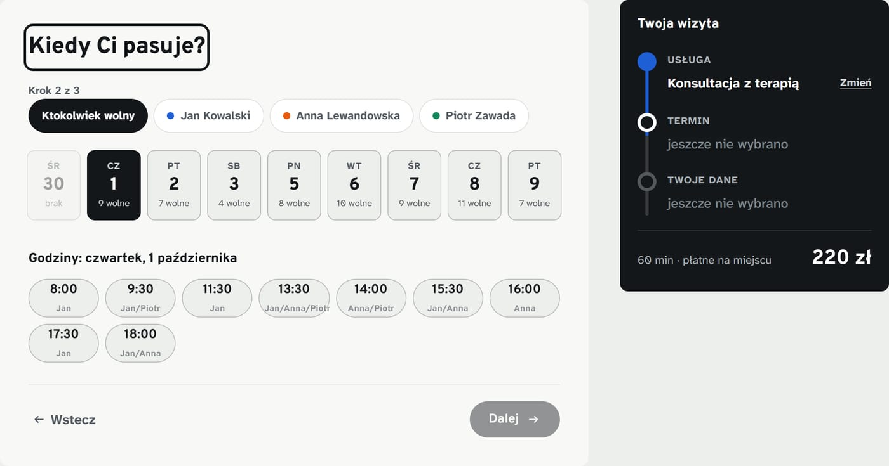
Powiększ04
Wychodzi z konkretem, nie z nadzieją
Numer rezerwacji, godzina, adres, imię osoby, która przyjmie — i trzy zdania o tym, co będzie się działo dalej. Pacjent, który wie, czego się spodziewać, rzadziej odwołuje i rzadziej znika bez słowa.
- Wizyta wpada do kalendarza w telefonie jednym kliknięciem
- Trasa do gabinetu bez przepisywania adresu
- Zapowiedź SMS-a dzień przed wizytą, żeby nikogo nie zaskoczył
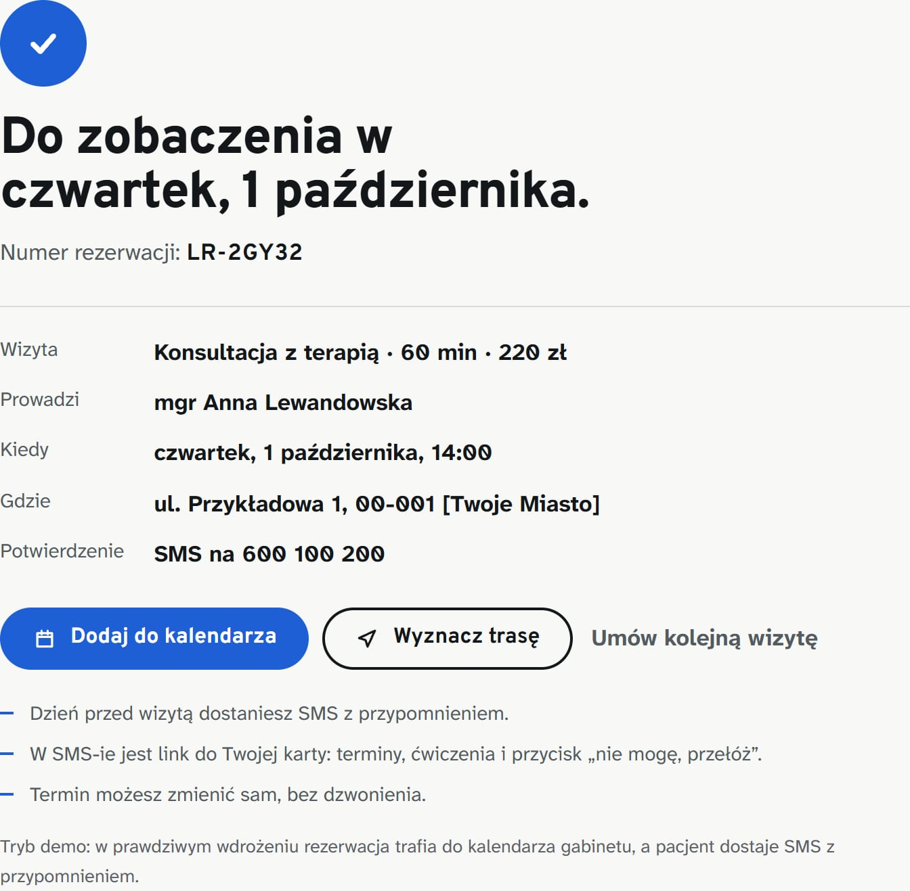
Powiększ05
Każda dolegliwość ma własną stronę — i to ona wchodzi do Google
Ktoś wpisuje „ból krzyża fizjoterapeuta Kraków” i trafia na stronę o bólu krzyża: objawy, które zna z własnego ciała, przebieg terapii, ile to trwa, ile kosztuje i kto się tym zajmuje. Nie na ogólną zakładkę „oferta”, z której i tak by wyszedł.
- Tyle osobnych stron, ile problemów leczysz — każda pod inne wyszukiwanie
- Pytania i odpowiedzi w formie, którą Google pokazuje wprost w wynikach
- Każda kończy się wolnym terminem, a nie prośbą o kontakt
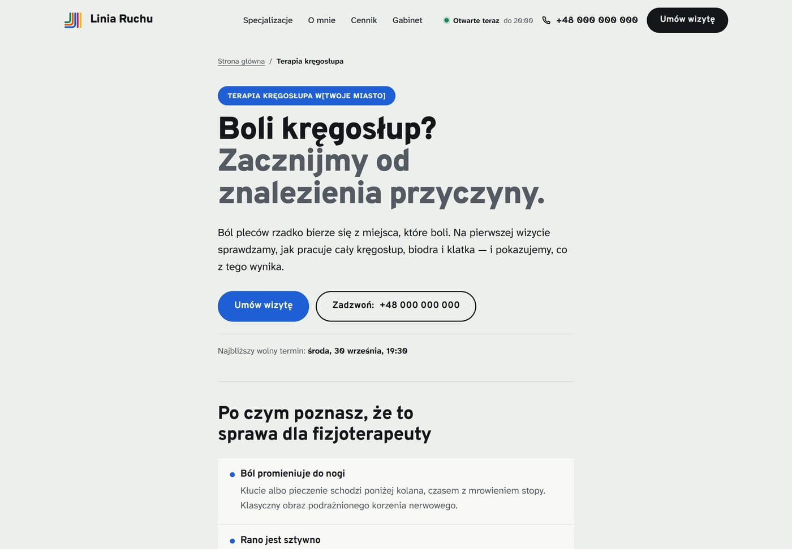
Powiększ06
Widzi człowieka, do którego idzie
Zdjęcie, specjalizacja, kursy, godziny przyjęć i najbliższy wolny termin każdej osoby. Pacjent, który wybrał konkretną twarz, przychodzi pewniejszy — i dużo rzadziej odwołuje w przeddzień.
- Przy każdej osobie przycisk, który zaczyna rezerwację właśnie do niej
- Godziny biorą się z Twojego grafiku, więc nie da się obiecać terminu, którego nie ma
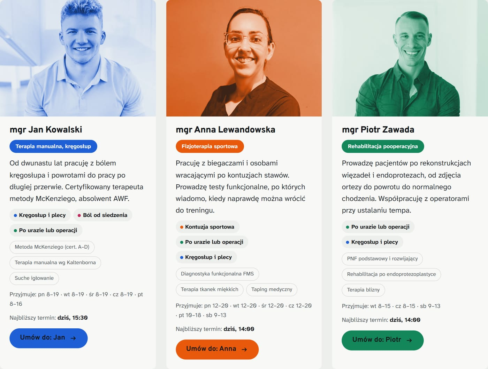
Powiększ07
Pakiet Prowadzenie
Dzień przed wizytą dostaje SMS — i własną kartę terapii
Bez logowania, bez aplikacji, bez hasła do wymyślenia i zapomnienia. Klika w link z SMS-a i widzi swoją terapię: cel zapisany jego słowami, najbliższą wizytę, ćwiczenia na ten tydzień i jedno pytanie o ból.
- Przycisk „nie mogę, przełóż” — sam wybiera nowy termin z grafiku swojego terapeuty, zamiast dzwonić w trakcie Twojej wizyty
- Wizyta do kalendarza w telefonie, żeby nie wypadła mu z głowy
- Notatka od Ciebie, jeśli chcesz coś przypomnieć na piśmie
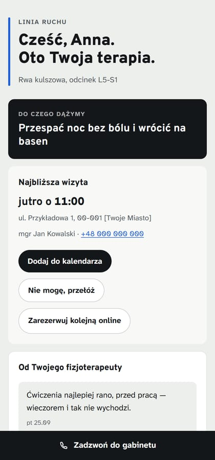
Powiększ08
Pakiet Prowadzenie
Ćwiczenia, które naprawdę robi w domu
Lista na ten tydzień, z liczbą powtórzeń i miejscem na Twój materiał. Pacjent odhacza to, co zrobił — i to jedyne miejsce, z którego bierze się procent ćwiczeń w Twoim panelu. Nikt nie musi pytać „i jak tam ćwiczenia?”, bo odpowiedź już jest.
- Przy ćwiczeniu, do którego podpiąłeś nagranie, jest przycisk „obejrzyj” — reszta ma ramkę z zapowiedzią
- Karta do wydruku dla tych, którzy nie chcą klikać w telefonie; adres nagrania idzie na papier
- Odhaczenie widzisz jeszcze zanim pacjent do Ciebie przyjdzie
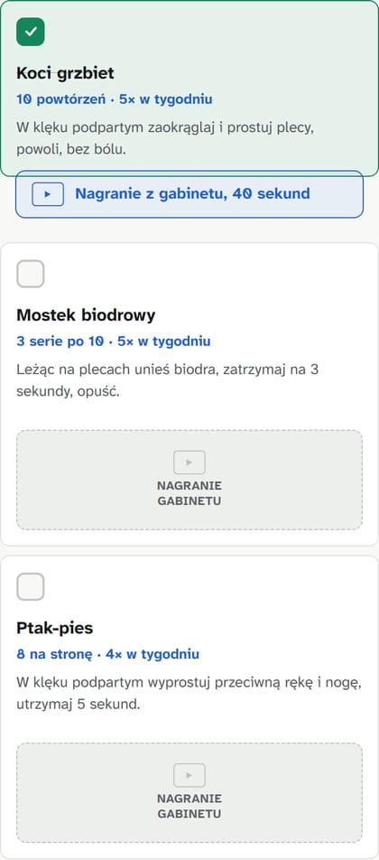
Powiększ09
Pakiet Prowadzenie
Na koniec dostaje wypis, a nie ciszę
Kiedy zamykasz cykl, ta sama karta zmienia się w podsumowanie: ile wizyt się odbyło, o ile spadł ból, ile ćwiczeń zrobił, ile to wszystko trwało. Do tego, co zostawiasz mu na dalej i co ma zrobić, gdyby wróciło.
- Liczby wynikają z przebiegu terapii, nie z ankiety zadowolenia
- Jest przycisk rezerwacji, bo nawrót to najczęstszy powód powrotu
- To jest ta kartka, którą pacjent pokazuje znajomemu z tym samym problemem
 Powiększ
Powiększ
10
Na telefonie tak samo — a stamtąd przychodzi większość
Ludzie szukają fizjoterapeuty wieczorem, w łóżku, na telefonie. Cała strona jest zbudowana pod ten ekran: duże przyciski, „Zadzwoń” zawsze pod kciukiem, rezerwacja bez przewijania na boki.
- Pasek z telefonem i rezerwacją przyklejony na dole
- Sygnał „otwarte teraz” albo „otwieramy jutro o 8:00”, liczony z grafiku
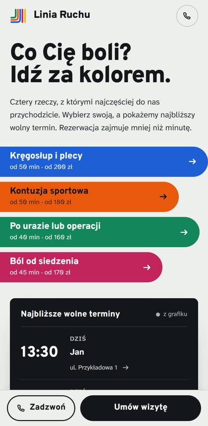
PowiększKalendarz dostępności jest w każdym pakiecie. W Widoczności służy głównie do włączania godzin, na które można się umówić, a rezerwacje wpadają do Kalendarza Google. W pakiecie Prowadzenie ten sam kalendarz jest narzędziem do zarządzania wizytami, a do tego dochodzi komunikacja z pacjentem i ćwiczenia: panel, wiadomości i karty pacjentów. Nie trzeba się tego uczyć — każdy ekran kończy się jedną decyzją i przyciskiem przy niej.
01
Rano otwierasz jedną stronę i wiesz, co robić
Po lewej dzisiejszy grafik z jednym kliknięciem przy każdej wizycie. Po prawej ludzie, którzy właśnie wypadają z terapii. Do tego nowi pacjenci bez kolejnego terminu i to, skąd przyszli. Bez szukania po zakładkach.
- Potwierdź, odbyta, nie przyszedł, przełóż, odwołaj — wszystko z listy
- Kto zarezerwował w nocy przez stronę, leży rano w „Nowych pacjentach” z podpisem nowy
- Każdą zmianę cofniesz jednym kliknięciem, więc nie ma czego się bać
 Powiększ
Powiększ
02
Cztery liczby, które mówią, jak idzie
Bez wykresów i bez wskaźników, które trzeba sobie tłumaczyć. Ile wizyt masz dzisiaj, ilu ludzi wyszło bez kolejnego terminu, ile terapii jest w toku i ile pieniędzy przyniósł ten miesiąc.
- Przychód to wizyty, które naprawdę się odbyły — nie te umówione
- Wolne godziny mówią, ilu jeszcze możesz dziś przyjąć
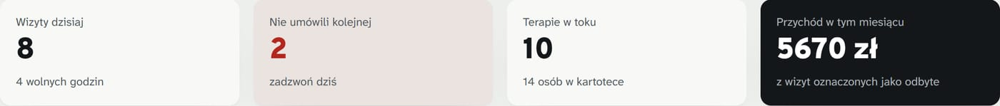
Powiększ03
Podaje nazwiska ludzi, którzy właśnie odpadają
Tego nie zrobi żaden kalendarz. Panel porównuje plan terapii z tym, co dzieje się naprawdę, i rano kładzie przed Tobą dwa nazwiska z powodem: „25 dni bez wizyty, a plan był co 7”, „z dwunastu zadanych ćwiczeń odhaczył jedno”.
- Przy każdym nazwisku telefon i przycisk, który od razu umawia termin
- Jeśli ktoś w ogóle nie odpowiada, też to widzisz — cisza jest informacją
- Dwa telefony rano to zwykle jedna albo dwie wizyty więcej w tygodniu
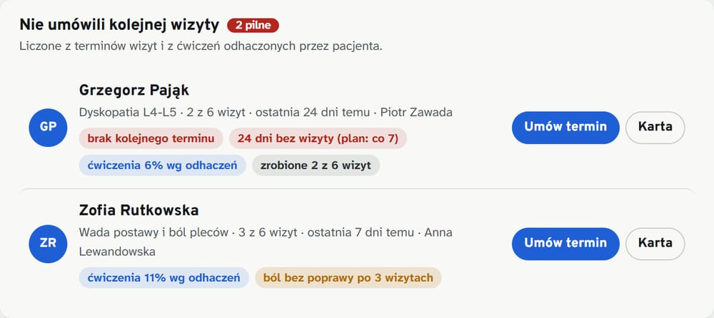
Powiększ04
Widoczność i Prowadzenie
Tydzień, w którym widać każdą lukę
Kolor paska mówi, jaki to problem, inicjały — kto przyjmuje. Wolne godziny są klikalne: klikasz i od razu umawiasz. Urlop albo szkolenie wycinasz z grafiku jednym oknem, na jeden dzień albo na tydzień.
- W Widoczności to tu włączasz godziny, na które pacjent może się umówić — rezerwacje wpadają wtedy do Kalendarza Google
- W Prowadzeniu ten sam kalendarz prowadzi wizyty: statusy, przekładanie, odwoływanie i seria
- Blokada może dotyczyć jednej osoby albo całego gabinetu
- Przy wolnej godzinie widać, kto z zespołu może ją wziąć
- Terminy z przeszłości nigdy nie pokazują się jako wolne
 Powiększ
Powiększ
05
Sześć wizyt jednym kliknięciem
Zaplanowałeś osiem wizyt co tydzień? Nie umawiaj ich po kolei. Zaznaczasz „umów całą serię”, podajesz odstęp i panel rozkłada terminy — sam przesuwając te, które trafiłyby w dzień wolny albo na godzinę już zajętą.
- Cała seria u tej samej osoby, bo pacjent wraca do swojego terapeuty
- Kolizje omijane bez cichego nadpisywania czyjejś wizyty
 Powiększ
Powiększ
06
Wszystko o jednej osobie w jednym miejscu
Cel jej słowami, plan wizyt, ćwiczenia, ból z ankiet, wiadomości, notatki i historia kontaktu. Z karty umówisz wizytę, przełożysz ją, napiszesz SMS i zamkniesz terapię — bez wychodzenia do innej zakładki.
- Postęp liczy się z wizyt, które faktycznie się odbyły
- Notatki są na samej górze, a pod nimi opis problemu napisany przez pacjenta przy rezerwacji — jego słowami
- Notatka zostaje u Ciebie albo, jeśli zdecydujesz, trafia do karty pacjenta
- Historia kontaktu z datą i godziną — wiadomo, kiedy dokładnie co poszło
- Plan ćwiczeń składasz z własnej biblioteki: swoje opisy, swoje nagrania, swoje domyślne powtórzenia
- Gdy pacjent wraca po latach, zaczynasz nowy cykl na tej samej karcie, zamiast zakładać go od nowa
- Tej samej osoby nie da się wpisać dwa razy — panel rozpozna numer bez spacji i nazwisko bez ogonków
 Powiększ
Powiększ
07
Widzisz, co pacjent odpowiedział między wizytami
Ból po każdej wizycie i odhaczone ćwiczenia tydzień po tygodniu. Zanim wejdzie do gabinetu, wiesz, czy było lepiej, czy gorzej — i czy w ogóle robił to, co ustaliliście.
- Kolejne odczyty bólu z podpowiedzią, w którą stronę to idzie
- Tabela tygodni pokazuje, kiedy zapał się skończył — zwykle w trzecim tygodniu
- Jeśli nie odpowiedział, jest tam napisane wprost, a nie zastąpione liczbą
- Jednym przyciskiem przechodzisz do widoku „dzień po dniu” tego pacjenta
 Powiększ
Powiększ
08
Zakładka „Od pacjenta”: co zrobili dzisiaj, dzień po dniu i tydzień po tygodniu
Jedno miejsce na to, co ludzie odsyłają między wizytami. Rano widzisz, kto dzisiaj ćwiczył, co dokładnie odhaczył i o której, jak odpowiedział o bólu — i kto jeszcze milczy. Jednym kliknięciem schodzisz do jednego pacjenta i oglądasz każdy jego dzień osobno, a nie tylko podsumowanie tygodnia.
- Dziś: ćwiczenia z godziną odhaczenia, odpowiedź o bólu i zestawienie, kto jeszcze nic nie zaznaczył
- Dzień po dniu: czternaście ostatnich dni jednej osoby — co zrobiła, czego nie, jaki dała ból
- Tygodnie: cały gabinet w jednej tabeli, z kolejnością ułożoną pod telefony
- Ćwiczenia: Twoja biblioteka, a przy każdej pozycji widać, jak chętnie pacjenci ją robią
- Kto nic nie zaznaczył, ma to napisane wprost — niczego nie dopowiadamy za pacjenta
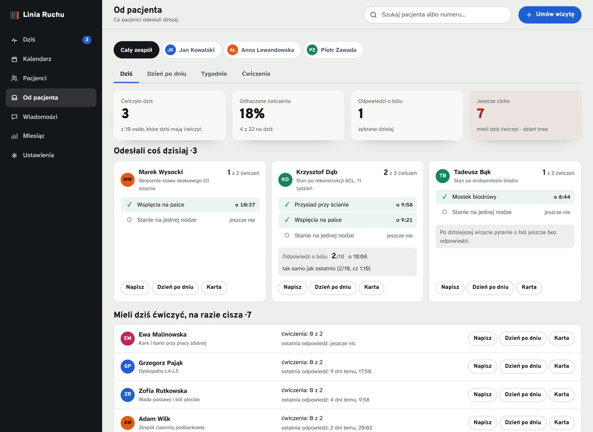
Powiększ09
Wiadomości prowadzisz z karty pacjenta
W karcie widzisz konkretne SMS-y, które do tej osoby wyjdą: kiedy, o której i w jakich słowach. Każdy możesz poprawić, przesunąć, wysłać od razu albo wyjąć z kolejki. Niżej jest lista rodzajów wiadomości — tu decydujesz raz, a nie przy każdym pacjencie osobno.
- Jeden włącznik na rodzaj wiadomości: przypomnienie o wizycie, pytanie o ból, przypomnienie o ćwiczeniach, prośba o opinię
- Przypomnienie o ćwiczeniach idzie w każdy dzień ćwiczeń — i milknie w dniu, w którym pacjent sam je odhaczy
- Porę i dni ustawiasz dla całego gabinetu albo inaczej dla jednej osoby
- Treść piszesz raz; imię, godzina i adres wchodzą same
- Pacjent bez zgody na SMS nie dostanie nic, niezależnie od ustawień
 Powiększ
Powiększ
10
A jak wolisz, całą kolejkę widzisz naraz
Osobna zakładka pokazuje wszystko, co wyjdzie w najbliższych dniach, dzień po dniu i pacjent po pacjencie. Przydaje się w poniedziałek rano, kiedy chcesz jednym rzutem oka sprawdzić, co tydzień ma do powiedzenia Twoim pacjentom.
- Wiadomość spóźniona albo przesunięta jest oznaczona, więc nic nie ginie po cichu
- Możesz dopisać własną wiadomość, poza wszystkimi regułami
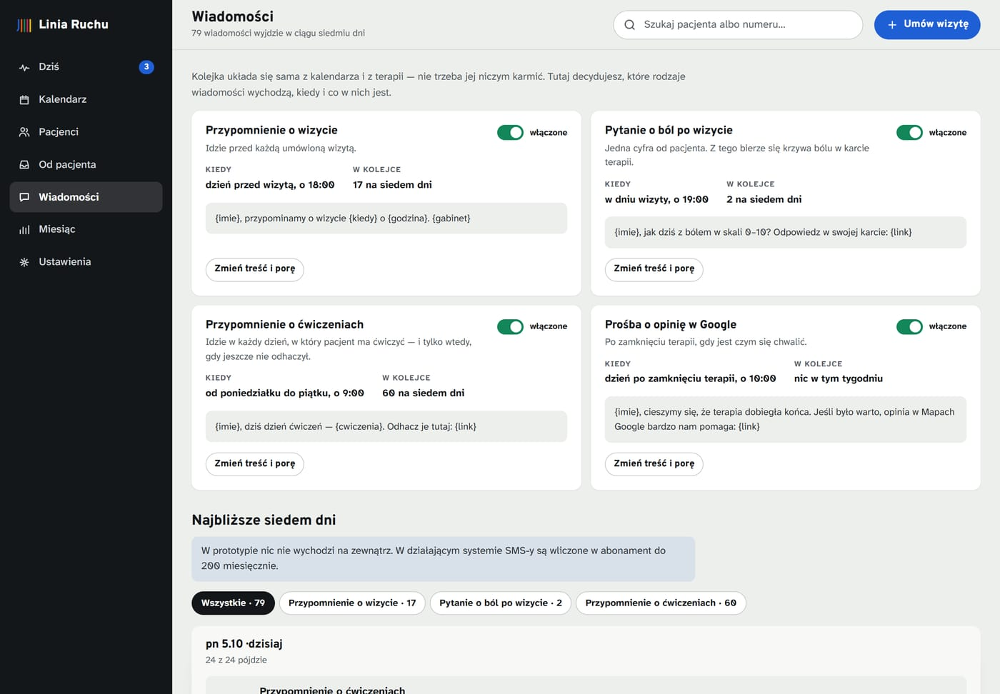
Powiększ11
Notatki, które nie są dokumentacją medyczną
Dwa zdania, żeby pamiętać: o czym pogadać na następnej wizycie, czego ta osoba ma unikać, co ustaliliście. Domyślnie zostają u Ciebie. Jednym kliknięciem wpuszczasz je do karty, którą pacjent otwiera z SMS-a.
- Wyraźnie widać, która notatka jest tylko Twoja, a którą widzi pacjent
- Te widoczne trafiają też na wypis po zamkniętej terapii
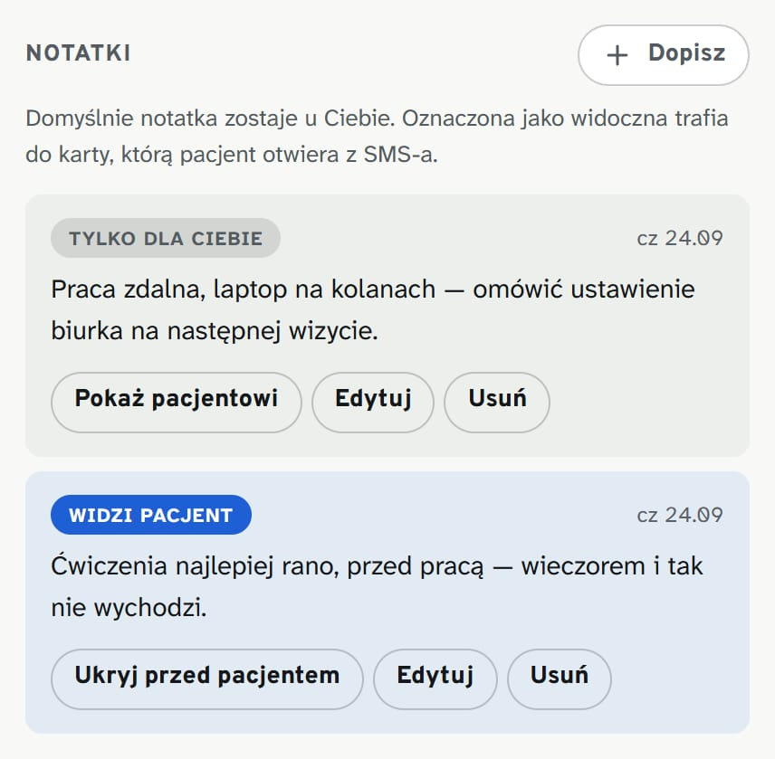
Powiększ12
Raz w miesiącu widzisz, co naprawdę się wydarzyło
Ilu przyszło nowych pacjentów i skąd, ile wizyt się odbyło, ile terapii dokończyłeś i o ile spadł ból u tych, którzy dotrwali do końca. Jedna strona, którą da się przeczytać przy kawie.
- Źródła pacjentów pokazują, co faktycznie działa: mapy, strona, polecenia czy reklama
- Spadek bólu liczy się z zamkniętych terapii, więc jest czym się pochwalić na stronie
 Powiększ
Powiększ
13
Rośniesz? Dokładasz osobę i jej godziny
Każdy terapeuta ma własny grafik, własny kolor i własny zestaw problemów. To z tych grafików liczą się wolne terminy — i te same terminy widzi pacjent na stronie. Nie ma dwóch kalendarzy do pilnowania.
- Osoby nie da się usunąć, gdy ma umówione wizyty — panel powie, ile ich zostało
- Terapię można przepisać komuś innemu razem z przyszłymi wizytami
 Powiększ
Powiększ
Wejdź i poklikaj
Umów fikcyjną wizytę na stronie, a potem znajdź ją w panelu. Oznacz jako odbytą, umów serię, wyłącz jeden rodzaj SMS-ów, zamknij terapię i zobacz wypis. Wszystko działa naprawdę i wszystko da się cofnąć — dane z dema zostają w Twojej przeglądarce.